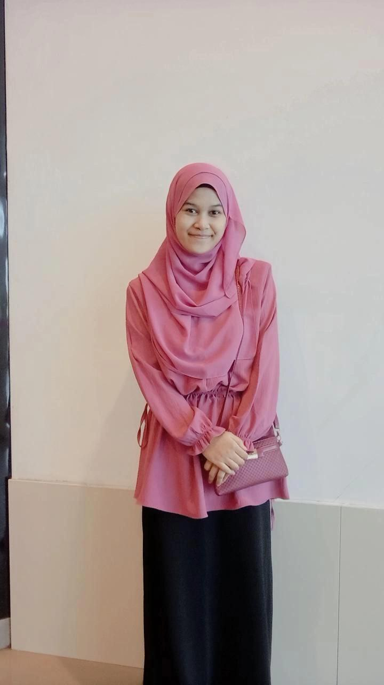

<html></html>
<head>
<title>about me</title>

<link rel="stylesheet" href="css/style.css">

</head>
<body>
    <nav>
        <a href = "index.html">HOME</a>
        <a href="about me.html">ABOUT ME</a>
        <a href="education.html">EDUCATION</a>
        <a href="experience.html">EXPERIENCE</a>
        <a href="skill.html">SKILL</a>
        <a href="contact.html">CONTACT</a>
    </nav>

    <style>
        body {
            
            background-image: url("image/blue.jpg");
            background-repeat: no-repeat;
            background-position: center;
            background-size: cover;
          }
          </style>
    </head>

<div align="center">

</div>
<center>
<h1>Welcome to Haidah Zahari's Web Design & Development Services in Kota Bharu, Malaysia</h1>
</center>
<center>
<h2>Welcome To My Website<h2></h2>
</center>

<center>
<p align="center"<bold></p>
<p></p>
<p </p>

<p></p> Hello all, This is my personal website. Lets explore what was here</p>

<p> About Me</p>

<p>My name is Haidah Binti Zahari. I am 22 years old and still single.
 I come from Tumpat, Kelantan and I am currently studying at a University Teknologi Mara Kampus Kota Bharu. 
 My hobbies are listening music and reading novel. My ambition is to want to be a business woman. 
 I have 6 siblings and i am forth. I am always learning to be independent woman and always be successful people
  in my future. I want my parents proud of me. I love myself. I have a pet. My pet is cat. I only have one cat.
 It is so cute. Then, my favourite colour is pink. Majority all of my thing is pink. It make me happy
and enjoy of this colour. In my life, i hope that i can be more confident, believe in myself and try to be
a good person with my version.</p>

<p></p>
</center>

</body>
</html>


</head>
<body>
    

